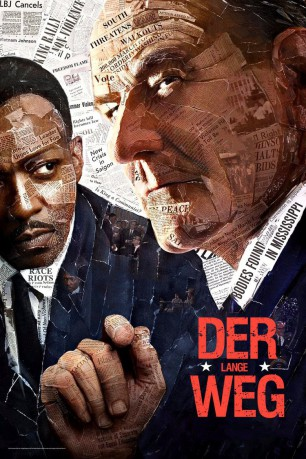
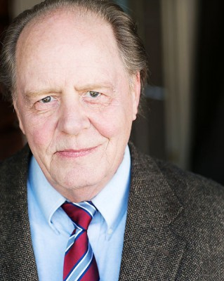

#4475 Der Lange Weg
Alternativ: All the Way
 
 IMDB-Wertung: 7.4 / 10
IMDB-Wertung: 7.4 / 10  Metascore: 0
Metascore: 0 
Lyndon B. Johnson (Bryan Cranston) übernimmt als Stellvertreter von John F. Kennedy nach der Ermordung des Präsidenten im Jahr 1963 das höchste Amt der Vereinigten Staaten von Amerika. Zu einer seiner ersten Amtshandlungen nach dem Einzug ins Weiße Haus zählt die Umsetzung des Civil Rights Act, der den Schwarzen die vollen Bürgerrechte gewähren soll. In dem Zusammenhang ist schon bald sein gesamtes politisches Geschick gefragt, da er auf der einen Seite versucht, den Wünschen der konservativen Südstaaten-Politiker zu entsprechen, die ihm einst seinen Aufstieg ermöglichten und auf der anderen Seite möchte er den moralischen Ansprüchen von Martin Luther King (Anthony Mackie) gerecht werden. Neben seinen eigenen Charakterschwächen, mit denen er zu kämpfen hat, muss er sich obendrein auch noch mit dem eskalierenden Vietnam-Krieg auseinandersetzen.
Jahr: 2016
Dauer: 126 Minuten
FSK:
Land: USA Studio: HBOTonspuren: DD2.0 - ,
Untertitel:
Auflösung: 1080p (1920x1080) Größe: 4874 MB
Genre: Biographie, Drama, Geschichte
Regisseur: Jay Roach
Drehbuch: Frank Butler
Soundtrack:
Darsteller:
 Bryan Cranston als Lyndon B. Johnson
Bryan Cranston als Lyndon B. Johnson Anthony Mackie als Dr. Martin Luther King, Jr.
Anthony Mackie als Dr. Martin Luther King, Jr. Melissa Leo als Lady Bird Johnson
Melissa Leo als Lady Bird Johnson Frank Langella als Senator Richard Russell
Frank Langella als Senator Richard Russell Bradley Whitford als Senator Hubert Humphrey
Bradley Whitford als Senator Hubert Humphrey Stephen Root als J. Edgar Hoover
Stephen Root als J. Edgar Hoover Todd Weeks als Walter Jenkins
Todd Weeks als Walter Jenkins Ray Wise als Senator Everett Dirksen
Ray Wise als Senator Everett Dirksen Ken Jenkins als Rep. 'Judge' Smith
Ken Jenkins als Rep. 'Judge' Smith- Dohn Norwood als Ralph Abernathy
 Mo McRae als Stokely Carmichael
Mo McRae als Stokely Carmichael- Marque Richardson als Bob Moses
 Aisha Hinds als Fannie Lou Hamer
Aisha Hinds als Fannie Lou Hamer Joe Morton als Roy Wilkins
Joe Morton als Roy Wilkins- Eric Pumphrey als David Dennis
- Tim True als Deke Deloach
- Bo Foxworth als Robert McNamara
-  Jeff Doucette als Senator Jim Eastland
- Hilary Ward als Coretta King
 Spencer Garrett als Walter Reuther
Spencer Garrett als Walter Reuther Randy Oglesby als Senator Strom Thurmond
Randy Oglesby als Senator Strom Thurmond- Ned Van Zandt als Senator J. William Fulbright
- Joe O'Connor als Senator Robert Byrd
 Bruce Nozick als Stanley Levison
Bruce Nozick als Stanley Levison- Samantha Bogach als Luci Johnson
 Hal Landon Jr. als Speaker John McCormack
Hal Landon Jr. als Speaker John McCormack Stoney Westmoreland als Representative James Corman
Stoney Westmoreland als Representative James Corman Matthew Glave als Governor Carl Sanders
Matthew Glave als Governor Carl Sanders Toby Huss als Governor Paul B. Johnson
Toby Huss als Governor Paul B. Johnson- Corby Sullivan als Deputy Cecil Price
- Regi Davis als Aaron Henry
- Gregory Marcel als Edwin King
- Zachary Barton als JFK's Secretary
- Ted Jonas als Sobbing Secret Service Agent
 Kevin Brief als New Orleans Announcer
Kevin Brief als New Orleans Announcer Kerry Hoyt als Clerk of the House
Kerry Hoyt als Clerk of the House Bill Timoney als Campaign Advisor
Bill Timoney als Campaign Advisor Jeff Witzke als TV Announcer
Jeff Witzke als TV Announcer- Dan Sachoff als TV Announcer
- Dale E. Turner als Choir Director
- Matt Lander als Party Aide
- Keith Barber als Older Man
- Christopher Abram als Congressman
- Nev Smith als White House Staff
- Shawn Ashley als Humphrey's Secretary , uncredited
- Jack J. Bennett als Man in Crowd , uncredited
- Johnnie Boyd als Politician , uncredited
 David Cohen als Senator , uncredited
David Cohen als Senator , uncredited- Aaron David als Mississippi Delegate , uncredited
- Barry Goldwater als Himself , archive footage, uncredited
Datei: X:\2016(G-M)\Lange Weg, Der (2016, FSK, 1920x1080).mkv seit 26.09.2016
Festplatte: HD 2016(A-Z)
 Es gibt insgesamt 164 Filme in der Gruppe '2016(G-M)'
Es gibt insgesamt 164 Filme in der Gruppe '2016(G-M)'